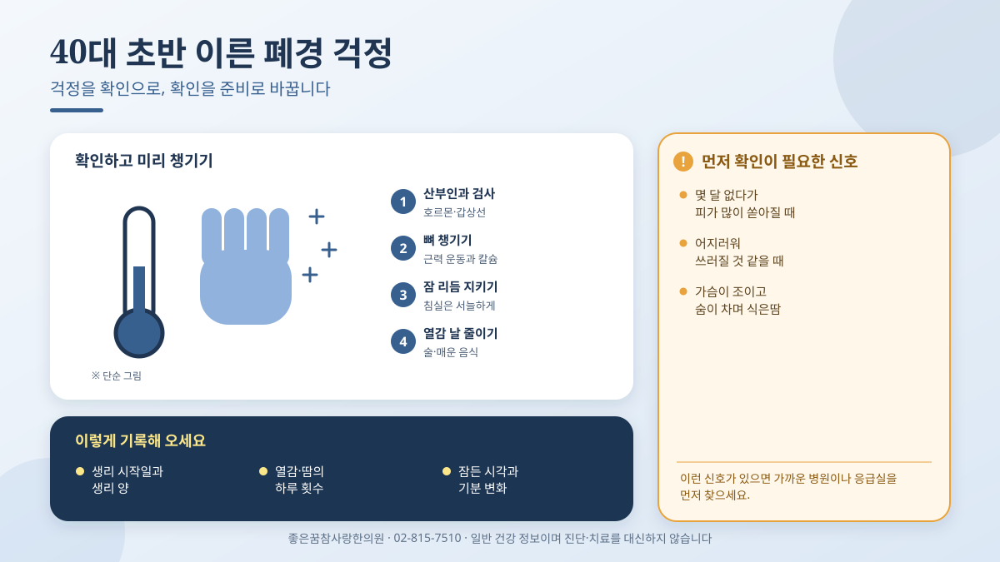

이종호 한의사 감수좋은꿈참사랑한의원 대표원장 (한의사 면허번호 19769)발행 2026-11-26 · 수정 2026-11-26
이 글의 차례
달력을 넘기다 문득 마지막 생리가 언제였는지 손가락으로 세어 봅니다. 두 달이 넘었습니다. 요즘 들어 생리 양도 확 줄었고, 밤에 자다가 얼굴이 화끈해져 이불을 걷어차는 날도 생겼습니다. 친구들은 아직 다들 멀쩡한 것 같은데, 나만 벌써 폐경이 오는 건 아닐까. 그 생각에 한동안 마음이 가라앉습니다.
폐경은 보통 50세 전후에 찾아옵니다. 그보다 이른 40대 초중반에 폐경이 오는 것을 이른 폐경이라고 하고, 40세 이전에 난소 기능이 떨어져 생리가 멈추는 경우는 조기 난소 기능 저하, 흔히 조기 폐경이라고 부르며 따로 구분합니다.
다만 40대 초반에 생리가 들쭉날쭉해진다고 해서 모두 폐경이 가까워졌다는 뜻은 아닙니다. 스트레스, 체중 변화, 갑상선, 젖분비 호르몬처럼 다른 이유로도 생리가 흔들릴 수 있습니다. 그래서 걱정을 혼자 키우기보다 무엇이 원인인지 먼저 확인하는 것이 순서입니다.
왜 생리가 40대 초반에 흔들릴까요
난소 안에는 태어날 때부터 정해진 수의 난포가 있고, 나이가 들면서 그 수가 조금씩 줄어듭니다. 난포가 줄어들면 배란이 매달 고르게 일어나지 않고, 여성 호르몬의 높이도 오르내림이 커집니다. 이 시기를 폐경 이행기라고 부르며, 생리 주기가 짧아지거나 길어지고 양이 달라지는 변화가 나타납니다.
이 속도는 사람마다 꽤 다릅니다. 어머니나 언니가 이른 나이에 폐경을 겪었다면 비슷한 흐름을 보일 수 있고, 흡연, 난소 수술이나 항암 치료를 받은 경험, 일부 자가면역 질환도 난소 기능이 일찍 줄어드는 데 영향을 줄 수 있습니다.
반대로 폐경과 상관없이 생리가 흔들리는 경우도 많습니다. 큰 스트레스나 잠 부족, 급격한 체중 감소나 증가, 무리한 운동은 배란을 건너뛰게 만들 수 있고, 갑상선 기능 이상이나 젖분비 호르몬이 높은 경우에도 생리가 멈추거나 늦어질 수 있습니다. 임신 가능성도 꼭 함께 확인해야 합니다.
한의학에서는 이런 시기를 몸의 음과 혈이 점차 줄어드는 흐름으로 설명하며, 열감과 건조함이 두드러지는지, 기운이 처지고 차가운 쪽이 두드러지는지를 나누어 보기도 합니다. 이것은 진찰할 때 몸의 경향을 읽는 전통적인 설명이지 폐경을 진단하는 말은 아닙니다.
산부인과에서는 무엇을 확인하나요
생리가 몇 달씩 없거나 주기가 크게 흔들린다면 산부인과에서 확인을 받아 보세요. 대개 임신 검사와 함께 난포자극호르몬, 에스트로겐 같은 호르몬 수치, 필요하면 갑상선 기능과 젖분비 호르몬을 혈액으로 확인합니다. 초음파로 자궁과 난소의 모습도 함께 봅니다.
호르몬 수치는 폐경 이행기에 오르내림이 커서 한 번의 결과만으로 판단하기 어려운 경우가 있습니다. 그래서 의사 선생님이 몇 주 간격으로 다시 검사하자고 하시거나, 증상과 주기 변화를 함께 보며 판단하시기도 합니다.
결과를 들을 때는 지금이 폐경 이행기의 어느 쯤인지, 임신 가능성이나 피임은 어떻게 생각해야 하는지, 호르몬 치료를 고려할 상황인지를 함께 물어보세요. 특히 40세 이전이라면 뼈와 혈관 건강을 위해 호르몬 치료를 권하는 경우가 있어 산부인과와 충분히 상의하시는 것이 좋습니다.
이른 폐경은 어떤 점이 신경 쓰일까요
여성 호르몬은 생리만이 아니라 뼈, 혈관, 피부, 질과 방광, 잠과 기분에 두루 관여합니다. 그래서 폐경이 이르게 오면 이 보호막이 일찍 얇아지는 셈이라, 뼈와 혈관 건강을 조금 더 일찍부터 챙기는 것이 중요합니다.
뼈는 폐경 뒤 몇 년 사이에 빠르게 약해지는 경향이 있습니다. 산부인과나 내과에서 골밀도 검사 시기를 상의하고, 칼슘과 비타민 D, 근력 운동과 걷기를 생활에 들여 두세요. 혈압과 혈당, 콜레스테롤도 정기적으로 확인해 두면 좋습니다.
열감과 땀, 잠 문제, 기분 변화, 질 건조처럼 일상의 불편도 함께 찾아올 수 있습니다. 이런 증상은 사람마다 정도가 크게 다르니, 남과 비교하기보다 내 몸이 어떤 변화를 겪고 있는지를 차분히 기록해 보시는 것이 좋습니다.
질 건조와 소변 불편은 말하기 쑥스러워 오래 참는 분이 많은데, 산부인과에서 다룰 수 있는 방법이 있으니 편하게 상의해 보세요. 피부와 머리카락이 건조해지고 얇아지는 변화도 이 시기에 흔히 말씀하시는 부분입니다. 보습을 조금 더 챙기고 물을 자주 드시는 것부터 시작해 보세요.
임신을 생각하고 있다면
아직 아이를 원하고 계신다면 이른 폐경에 대한 걱정이 더 크게 다가옵니다. 이 경우에는 시간을 미루지 말고 산부인과나 난임 병원에서 난소 기능 검사를 받고, 지금 상황에서 가능한 선택지를 상의해 보세요.
반대로 임신을 원하지 않는다면, 생리가 들쭉날쭉한 시기에도 배란이 일어날 수 있어 피임이 여전히 필요합니다. 언제까지 피임을 이어 가야 하는지는 나이와 생리 상태에 따라 다르니 산부인과에서 확인해 두세요.
마음은 어떻게 받아들일까요
이른 폐경을 걱정하는 분들은 몸의 변화만큼 마음의 변화를 많이 말씀하십니다. 아직 젊은데 나이 든 것 같다는 서운함, 여성으로서 무언가가 끝나는 것 같은 허전함, 주변에 털어놓기 어려운 외로움이 함께 찾아옵니다.
이런 마음은 지극히 자연스럽습니다. 폐경은 끝이 아니라 몸의 리듬이 바뀌는 과정이고, 그 뒤의 삶도 길고 건강하게 이어 갈 수 있습니다. 오히려 이 시기를 계기로 내 몸을 더 살뜰히 챙기기 시작하는 분도 많습니다. 같은 경험을 한 사람들의 이야기를 듣거나, 가까운 사람에게 지금 겪는 변화를 털어놓는 것만으로도 마음이 한결 가벼워지기도 합니다.
갱년기 증상과 헷갈리기 쉬운 변화
40대 초반에 생기는 열감, 두근거림, 피로, 잠 문제가 모두 폐경 때문은 아닙니다. 갑상선 기능이 지나치게 높아지면 더위를 못 참고 땀이 많아지며 가슴이 뛰고 체중이 빠질 수 있고, 반대로 낮아지면 피로와 추위, 생리 변화가 함께 올 수 있습니다.
빈혈이 있으면 쉽게 지치고 두근거리며, 생리 양이 많았던 분이라면 특히 확인해 볼 만합니다. 우울감이나 불안이 커져 잠이 무너지고 가슴이 답답한 경우도 갱년기 증상과 비슷하게 느껴질 수 있습니다.
그래서 저는 증상만 듣고 '갱년기네요'라고 단정하지 않으려 합니다. 혈액 검사로 확인할 수 있는 부분은 먼저 확인하고, 그 결과를 바탕으로 생활과 진료 방향을 정하는 것이 순서입니다. 내과 건강검진 결과가 있다면 함께 가져와 주세요.
일과 가정 사이에서 겪는 변화
40대 초반은 일과 가정에서 맡은 역할이 가장 많은 때이기도 합니다. 회의 중에 갑자기 얼굴이 달아오르거나, 밤잠을 설친 채 아침 일찍 아이를 챙겨 보내야 하는 날이 이어지면 몸보다 마음이 먼저 지칩니다.
이런 시기에는 모든 것을 예전처럼 해내려 하기보다, 줄일 수 있는 것을 하나씩 내려놓는 것이 필요합니다. 잠이 부족한 주에는 저녁 약속을 줄이고, 집안일을 가족과 나누고, 하루 10분이라도 혼자 숨 돌리는 시간을 따로 떼어 두세요.
가족에게 지금 내 몸이 어떤 변화를 겪고 있는지 이야기해 두는 것도 도움이 됩니다. 이유 없이 예민해졌다는 오해를 줄이고, 필요할 때 도움을 청하기도 쉬워집니다.
먼저 이렇게 여쭙니다
처음 오시면 대략 이런 순서로 여쭙습니다. 미리 생각해 오시면 이야기가 훨씬 수월해집니다.
- 마지막 생리는 언제였고, 최근 몇 달의 주기는 어땠나요?
- 생리 양은 예전과 비교해 어떻게 달라졌나요?
- 열감, 땀, 잠, 기분 변화가 있으신가요?
- 어머니나 자매가 폐경을 겪은 나이를 알고 계신가요?
- 최근 체중 변화나 큰 스트레스가 있었나요?
- 산부인과 검사를 받으셨나요? 어떤 설명을 들으셨나요?
가족의 폐경 나이를 모르신다면 이번 기회에 어머니께 여쭤 보셔도 좋습니다. 생각보다 많은 것을 알려 주는 정보입니다.
진료실에 오시는 분들 가운데는 걱정이 커서 하고 싶은 말을 다 하지 못하고 돌아가시는 분도 있습니다. 궁금한 점과 요즘 달라진 점을 메모로 적어 오시면, 빠뜨리지 않고 하나씩 함께 살펴볼 수 있습니다. 걱정되는 점이 사소해 보여도 괜찮으니 편하게 적어 오세요.
특히 생리 변화가 언제부터 시작되었는지, 그 무렵에 이사나 이직, 가족의 일처럼 생활에 큰 변화가 있었는지도 함께 떠올려 보세요. 몸의 변화와 생활의 변화가 같은 시기에 겹쳐 있는 경우가 생각보다 많습니다.
일상에서 먼저 해 볼 수 있는 것
폐경 이행기의 몸은 리듬이 흔들리기 쉬운 상태입니다. 생활의 리듬을 고르게 해 두면 열감과 잠, 기분의 출렁임을 다루기가 조금 수월해집니다.
- 잠드는 시각과 일어나는 시각을 일정하게 맞추기
- 침실을 조금 서늘하게, 얇은 이불을 여러 겹으로
- 매운 음식, 술, 진한 커피는 열감이 심한 날 줄이기
- 하루 30분 걷기와 주 2~3회 근력 운동
- 우유, 두부, 멸치처럼 칼슘이 든 음식 챙기기
- 담배를 피운다면 이번 기회에 끊기
열감이 올라올 때는 숨을 천천히 길게 내쉬며 잠시 멈추는 것이 도움이 될 수 있습니다. 가방에 작은 부채나 손수건을 넣어 두고, 겉옷은 쉽게 벗고 입을 수 있는 것으로 고르세요.
근력 운동은 뼈와 근육을 함께 지키는 데 쓸모가 있습니다. 거창한 운동이 아니어도 의자에서 앉았다 일어나기, 벽 짚고 팔굽혀펴기, 계단 오르기처럼 생활 속에서 시작할 수 있는 것부터 해 보세요.
식사는 끼니를 거르지 않고 단백질과 채소를 고르게 드시는 것이 바탕입니다. 이 시기에는 같은 양을 먹어도 뱃살이 늘기 쉬워, 저녁 늦은 시간의 간식과 단 음료를 줄이는 것만으로도 몸이 한결 가벼워지는 분이 많습니다. 콩과 두부, 들깨처럼 익숙한 식재료를 반찬으로 자주 올려 보세요.
한의원에서 함께 살필 수 있는 경우
- 생리가 들쭉날쭉해지며 열감, 땀, 잠 문제가 함께 생긴 경우
- 산부인과 검사를 받았고 생활 관리를 함께 하고 싶은 경우
- 손발은 찬데 얼굴로는 열이 오르는 느낌이 반복되는 경우
- 쉽게 지치고 가슴이 두근거리며 마음이 예민해진 경우
- 호르몬 치료를 받기 어렵거나 망설여져 몸 관리를 고민하는 경우
좋은꿈참사랑한의원에서는 먼저 아래 '먼저 확인이 필요한' 신호가 없는지, 산부인과 확인을 받으셨는지부터 여쭙니다. 그다음 맥을 짚고 열감과 손발 온도, 잠과 소화, 기분 변화를 함께 살핍니다. 진찰한 내용을 바탕으로 침, 한약 상담 가운데 지금 상태에 맞는 방법을 정합니다.
한약을 상의할 때는 호르몬제를 포함해 드시는 약과 영양제를 모두 확인한 뒤 신중하게 정합니다. 산부인과에서 받고 계신 진료와 처방은 그대로 이어 가시고, 호르몬 치료 여부는 산부인과와 상의하시면 됩니다. 임신을 준비 중이라면 먼저 알려 주세요.
이렇게 기록해 오시면 상담이 쉬워집니다
두세 달 정도 아래 내용을 간단히 적어 보세요. 생리 앱에 증상 메모 기능이 있다면 그것을 쓰셔도 됩니다.
- 생리 시작일과 끝난 날, 생리 양
- 열감과 땀이 있었던 날과 하루 횟수
- 잠든 시각과 깬 시각, 밤에 깬 횟수
- 기분이 가라앉거나 예민했던 날
- 질 건조, 소변 불편 같은 변화
- 운동한 날과 음주한 날
이 기록은 산부인과 진료에서도 그대로 도움이 됩니다. 호르몬 수치 한 번보다 몇 달의 흐름이 더 많은 것을 알려 주는 경우가 많습니다.
걱정을 확인으로, 확인을 준비로
이른 폐경이 걱정된다는 것은 내 몸의 변화를 일찍 알아차렸다는 뜻이기도 합니다. 그 알아차림을 걱정으로만 두지 말고, 확인과 준비로 바꿔 보세요. 원인을 확인하고, 뼈와 혈관을 미리 챙기고, 잠과 마음을 돌보는 것이 그 준비입니다.
이번 달에는 생리와 열감을 한 줄씩 기록하고, 아직이라면 산부인과 검사 날짜부터 잡아 보세요. 결과와 기록을 들고 오시면 그다음 걸음을 함께 정해 보겠습니다.
이런 증상은 먼저 확인이 필요합니다
- 생리가 몇 달 없다가 갑자기 피가 많이 쏟아지며 어지러워 쓰러질 것 같은 경우
- 가슴이 조이듯 아프거나 숨이 차면서 식은땀이 나는 경우
이런 신호가 있으면 한의원보다 가까운 병원이나 응급실을 먼저 찾으세요.
함께 읽으면 좋은 글
- 갱년기에 몸이 달라질 때 한의원에서는 무엇을 먼저 묻나요?
- 생리가 몇 달째 없을 때(무월경)는 무엇을 먼저 확인하고 어떻게 살피나요?
- 생리 양이 눈에 띄게 줄어든 과소월경은 무엇을 확인하고 어떻게 살피나요?
- 난소 기능 저하(AMH 수치가 낮다)는 말을 들었을 때 임신 준비와 생활은 어떻게 살피나요?
- 폐경 뒤 뼈 건강은 생활에서 무엇을 챙기면 좋을까요?

여쭙는 것
- 마지막 생리는 언제였고, 최근 몇 달의 주기는 어땠나요?
- 생리 양은 예전과 비교해 어떻게 달라졌나요?
- 열감, 땀, 잠, 기분 변화가 있으신가요?
생활에서 해 볼 것
- 잠드는 시각과 일어나는 시각을 일정하게 맞추기
- 침실을 조금 서늘하게, 얇은 이불을 여러 겹으로
- 매운 음식, 술, 진한 커피는 열감이 심한 날 줄이기
한의원에서 함께 살필 것
- 생리가 들쭉날쭉해지며 열감, 땀, 잠 문제가 함께 생긴 경우
- 산부인과 검사를 받았고 생활 관리를 함께 하고 싶은 경우
- 손발은 찬데 얼굴로는 열이 오르는 느낌이 반복되는 경우
먼저 확인이 필요한 신호
- 생리가 몇 달 없다가 갑자기 피가 많이 쏟아지며 어지러워 쓰러질 것 같은 경우
- 가슴이 조이듯 아프거나 숨이 차면서 식은땀이 나는 경우
한눈에 보는 표
| 구분 | 핵심 |
|---|---|
| 여쭙는 것 | 마지막 생리는 언제였고, 최근 몇 달의 주기는 어땠나요? 생리 양은 예전과 비교해 어떻게 달라졌나요? |
| 생활에서 해 볼 것 | 잠드는 시각과 일어나는 시각을 일정하게 맞추기 침실을 조금 서늘하게, 얇은 이불을 여러 겹으로 |
| 한의원에서 함께 살필 것 | 생리가 들쭉날쭉해지며 열감, 땀, 잠 문제가 함께 생긴 경우 산부인과 검사를 받았고 생활 관리를 함께 하고 싶은 경우 |
| 먼저 확인이 필요한 신호 | 생리가 몇 달 없다가 갑자기 피가 많이 쏟아지며 어지러워 쓰러질 것 같은 경우 가슴이 조이듯 아프거나 숨이 차면서 식은땀이 나는 경우 |
자주 묻는 질문
40대 초반에 생리가 불규칙하면 폐경이 가까워진 건가요?
그럴 수도 있지만 스트레스, 체중 변화, 갑상선, 임신 같은 다른 이유 때문일 수도 있습니다. 산부인과에서 호르몬 검사로 먼저 확인해 보시는 것이 좋습니다.
호르몬 수치가 한 번 높게 나왔는데 폐경인가요?
폐경 이행기에는 호르몬 수치가 크게 오르내려 한 번의 결과로 판단하기 어려운 경우가 있습니다. 다시 검사할지, 증상과 함께 어떻게 볼지는 산부인과와 상의해 주세요.
한약으로 폐경을 늦출 수 있나요?
폐경 시기를 늦춘다고 약속드릴 수는 없습니다. 진찰 뒤 열감, 잠, 피로처럼 지금 불편한 부분을 살피고, 드시는 약을 확인해 신중하게 정합니다.
호르몬 치료와 한의원 진료를 함께 받아도 되나요?
함께 받으실 수 있습니다. 드시는 호르몬제 이름을 알려 주시면 그에 맞춰 진료 방향을 정하고, 호르몬 치료에 관한 결정은 산부인과와 상의하시면 됩니다.
생리가 불규칙하면 피임은 안 해도 되나요?
주기가 흔들려도 배란이 일어날 수 있어 피임이 필요할 수 있습니다. 언제까지 피임할지는 산부인과에서 확인해 두세요.
좋은꿈참사랑한의원은 재진 때 지난번 이야기부터 이어서 여쭙니다. 진료시간과 예약은 오시는 길에서 확인하세요.
어디서 상담받을 수 있나요?
좋은꿈참사랑한의원은 서울 동작구 만양로2길 2 신성빌딩 3층·5층(서울 동작구 상도동, 7호선 상도역 3번 출구 근처)에 있습니다. 한의사 3명(이종호 대표원장, 조영기 수석진료원장, 정원영 진료원장)이 진료합니다. 진료시간은 평일 09:30~20:00(점심 13:00~14:00), 토·일·공휴일 09:30~15:00이며, 방문 전 전화로 확인을 권합니다. 예약은 네이버 예약, 카카오톡 상담, 전화 02-815-7510로 받습니다.
이 글은 일반적인 건강 정보이며 개인의 진단이나 치료를 대신하지 않습니다. 증상이 있거나 복용 중인 약이 있다면 진료를 통해 확인하세요. 치료 효과는 개인마다 다를 수 있습니다.
작성 기준: 일반적으로 알려져 있는 건강 정보를 참고해 정리했습니다(대표원장 감수). 증상 기록은 1~2주 동안 하루 1회, 비슷한 시간에 적어 오시면 지난 상태와 비교하기 쉽습니다.